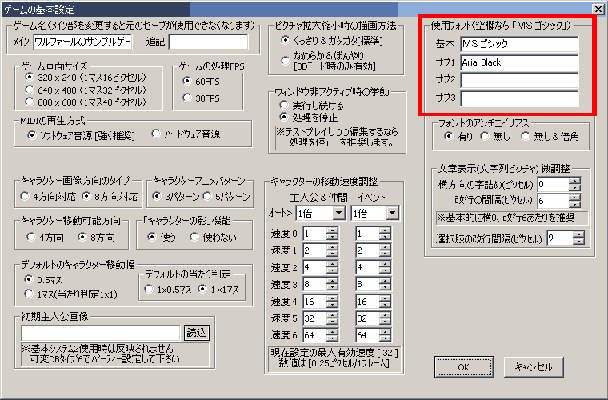
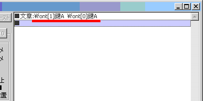
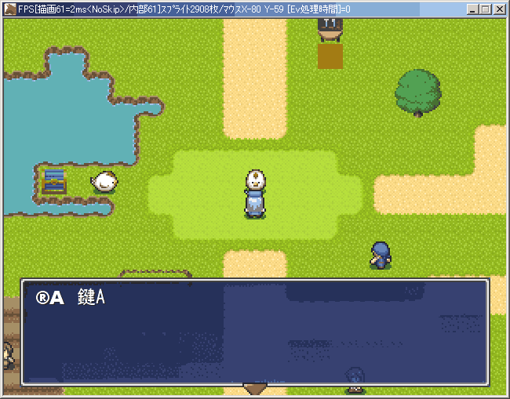

【目標】
ウディタでは、ゲームの好きなところに
好きなフォントを使用することができます。
または、「迷いの森」とか「魔王城」など、キーワードを
少し違うフォントにして目立たせたり。
魔法使いがイベントで魔法を使うときに、
特殊な文字のフォントを使って呪文のようなことをしゃべらせたり。
他にも、記号のような読めないフォントで表示された文章が、
アイテム「古文書」を持っているときだけ、
読めるフォントで表示されるようにしたり。
フォントの変更が出来ると、いろいろなことができるようになります。
今回は、イベントコマンドの文章表示を用いてメッセージ内の
フォントの変更を行うことで、その方法を習得します。
なお、ここでご紹介するのは、すでにウディタで使用できるよう
登録設定が完了したフォントを使用する方法です。
登録設定の仕方は
「ゲームに、気に入ったフォントを使いたい」でどうぞ。
| １．フォントの変更 ・「サンプルマップA」の適当な場所にイベントを 作成してニワトリの画像を設定しておきます。 ・イベントウィンドウの右下にある 「■ コマンド入力ウィンドウ表示 ■」を クリックしてください。 ・イベントコマンド入力ウィンドウのタブを 「1 文章の表示」に変更してください。 次に内容を入力します。 \font[1]鍵A \font[0]鍵A と入力し、「入力」ボタンを押してください。 「鍵A」の部分には実はあんまり意味はなく、 重要なのは「\font[(数字)]」です。 これは、それ以降の文字のフォントを切り替える 特殊文字の命令文で、数字の部分には 「ゲーム設定」から開ける「ゲームの基本設定」の 項目「使用ﾌｫﾝﾄ(空欄なら「ＭＳ ゴシック」)」 に登録されているフォントの登録番号が入ります(0〜3)。 基本〜サブ3がありますが、登録番号は上から順に0,1,2,3です。 デフォルトの状態では、基本フォントに「ＭＳ ゴシック」が、 サブフォント1に「Arial Black」が入っていますので、 「\font[1]」の後がArial Blackで表示され、 「\font[0]」の後がＭＳ ゴシックで 表示されるようになります。 |
 ここに登録されています  こんな風に打ちましょう |
| ２．確認 では、テストプレイしてイベントに話しかけてみましょう。 「鍵A」は２つ入力しましたが、Arial Blackフォントの方では 鍵という文字がRのような記号に変わってしまっています。 これはArial Blackが欧米言語用フォントであるため、日本語は 正しく表示できないのです。そのため漢字やひらがなを 入力すると、記号やフランス語文字などが出てきたりします。 Aのほうは正しい表記ですが、太さや高さ、横幅が明らかに 違うことが分かります。 もしうまく行かない場合は、手順1を見直してみてくださいね。 お疲れ様でした！ |
 フォントの違いですね |
【余談】
| \font[0]で指定できる「基本フォント」は、 命令文無しで普通に入力した時に使われるフォントと同じです。 ですので、\font[0]の使いどころは、今回のように、 一度別のフォントを使用した文字列の後ろの方で、 基本フォントを使用したい場合、それに戻すために使用します。 今回は、すでにウディタで使用できるようにゲーム設定で 登録したフォントを実際に使用する方法について ご紹介しましたが、この登録の方法は 「ゲームに、気に入ったフォントを使いたい」 でご説明していますので、必要な方はこちらもどうぞ。 |
＜＜執筆者：ウディタ公式ガイド執筆コミュ。＞＞